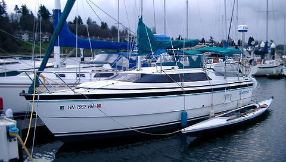
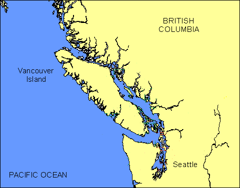
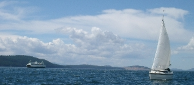
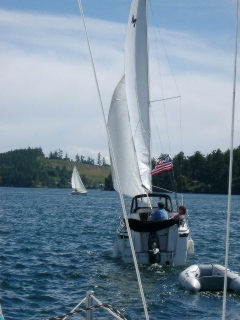
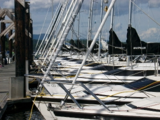

| Main | CB | FB | Fast | Size | Keel | Ballast | Point | Tall | Race | Lean | Ocean |
|
|
Murrelet is pictured below LOA = 26 LWL = 23' Beam = 7' 10" Draft = 9" 50 HP Nissan 2 stroke outboard Max Speed 21 MPH (24 theoretical) Cruising Speed 7 - 10 knots |
Murrelet is a
pocket cruiser capable of sailing
over its own bow wake. She planes and her manufacturer says she is capable
of reaching speeds above
17 MPH under sail. She also will single hand at
speeds over 20 MPH using a 50 HP motor or sail loaded down for an extended
cruise at a hull speed of 7 MPH.
The Murrelet hull design is 11 years old and this hull has become very popular. These
hulls have the most widely accepted and scrutinized movable ballast
.systems in the world. Sailing Anarcy agrees see forum. Murrelet was
launched in
February of 1999 and has been in Puget Sound water most of
that time.
Once rare, it is now common to spot others in her
class.
Originally fitted out by Blue Water Yachts for trailering, this
MacGregor
26X boat has been modified for continuous salt water use. She is about
5 feet longer than Trekka,
a pocket cruiser that sailed around the world from Victoria BC, in the mid
1950s, and four feet longer than a mini-transat
ocean
racer. Fully ballasted Murrelet has the stability of a
cruising keel boat. She reportedly has an extra layer of fiberglass (in
contrast to
other macGregor 26 models) making her suitable for the Alaska Inside
Passage. Outstanding hull symmetry and balance allow
unballasted motoring and sailing which is unusual for a
production trailerable sailboat.
The streaming media to the left follows Murrelet's adventures. Click on the picture to start a slide show. While loading, review the material below. Use the right mouse button on links to open a new window. Position your mouse over a picture for captions and instructions.
| |||

Murrelet's eighth year anniversary was 14 February 2005. Much has been learned. The Murrelet has converted my wife and I into sailors, after most of my lifetime power boating. The anniversary was honored with the replacement of the outboard - a quiet 4 stroke Suzuki. The prior year she was honored by interfacing the cruiser's GPS with a full cockpit enclosure. Mac26x boats may be the perfect boats for transitioning from power to sail. They offer high speed powering without compromising sailing performance. I have discussed the little vessel with hundreds of individuals, ranging from purest pocket cruising sailors, who consider anything non-wooded a compromise, to historians and museum curators, who have preserved information regarding design, construction and the adventure of ocean cruising, to racing enthusiasts, including America's Cup hopefuls. In addition I have had discussions with brand loyal production boat owners , including my sister (a Catalina loyal) and Hunter loyals. I have also chatted with more than 80 MacGregor boat owners, possibly 50 of them in person.
Owing to my 9 year experience with Murrelet - at least one sixth of that being physically aboard her - and supported by considerable arm chair sailing and the above, I addressed many sailing myths (or to be MacGregor about things I "scotched the rumors", which in contemporary usage means to kill the thing.)" This being done plans and contingency plans were finalized for a 1,000 mile cruise from Olympia Washington around Vancouver Island and back during June - July of 2002. Completion of this voyage remains a goal. In 2003, we joined a fleet of Mac26x cruisers for a San Juan Holiday and discussed plans with the captain of one of two Mac26x cruisers that has circumnavigated the island. Vancouver Island circumnavigation is considered to be practace for world circumnavigation and it was gratifying to have Georg Veleder praise his Mac26x (Escape out of Rio Rancho New Mexico) by saying that he "would sail her anywhere". Georg had previously circumnavigated a 30 foot Fisher about the island. Vac1792@aol.com.
In 2004 we are joined a fleet of a half dozen vessels from South Sound Sailing Society and Olympia Yacht Club on the West "wild" Side of Vancouver Island. Murrelet was made coastwise. The heavy anchor was mounted, the engine passed inspection and trials and crew updated first aid training. New charts were ordered. Physicals completed. A significant change from 2002 had to be made owing to vacation schedules. The Murrelet trailer was retrieved from mothballs, worked up to like new condition, shore crew were hired to transport the vessel and the boat was carted by Ferry in catching the SSSS/OYC fleet prior rounding Port Hardy.

The (what I hope is the first annual) macgregorsailors.com redezvous float plan can be accessed by clicking on the image above.

The chart above has hot spots important to servicing a vessel in transit or accomodating crew on shore. There is an excellent web site provided by the Ministry of Water, Land and Air Protection (see regional_maps) that best portrays where Murrelet will find moorage. Analysis of the hot spots and related web sites demonstrates the value of wireless internet for cruising as arial photographs are available showing ports, shorelines and areas of interest. Notice to mariners and weather reports are also available. The crew intends to use a Nokia 9290 Communicator phone for the above and for filing float plans with Vessel Assist.

WEEK ONEDay/Date Destination
1. June 17 - Olympia to Quartermaster Harbor 2. June 18 - to Bell Harbor 3. June 19 - Langley or Coupeville 4. June 20 - LaConner 5. June 21 - Washington Park 1100 6. June 22 - Rig Tune; Open Boat Friday Harbor 7. June 23 - Shaw Island Coaching |
WEEK TWODay/Date Destination 8. June 24 - Friday Harbor moorage; crew to Seattle 9. 10. 11. 12. 13. 14. |
WEEK THREEDay/Date Destination 15. Friday Harbor moorage; crew from Seattle 16. 17. 18. 19. 20. 21. |
WEEK FOURDay/Date Destination 22. Friday Harbor moorage; crew from Olympia 23. 24. 25. 26. 27. 28. |
WEEK FIVEDay/Date Destination* 29. 30. 31. 32. 33. 34. 35. |
 |
Murrelet is modified from factory stock in many ways (from a half reef point in the main to autopilot and radar) but the substantial modification for the circumnavigation is the CDI furling headsail which is reinforced Mylar and a bit smaller than the stock Genoa. She carries a 20lb CQR anchor and a 10 foot roll up Zodiac for this voyage. click on the photo below to see how the Northern most point of Vancouver Island was handled.
 Prior to rounding Cape Scott (northern
most point of
Vancouver
Island), the boat was rigged differently. The backstay was
tightened an extra inch or so to induce bend in the mast and the upper
shrouds were tightened as well. The lowers were loosened. The
combination of changes put a 2 to 3 inch bow forward in the center
of the mast. This prepared the cruiser for the anticipated 20 MPH+
winds on the west side. The stock backstay is mounted to the starboard
side which is optimal for the main sail when wind is from the port
side because wind gusts are spilled easier owing to a slight twist in
the mast to starboard. Prevailing winds might have put Murrelet on the
starboard tack while on the west side of the island. But the
plan was to sail single headsail if winds were fresh from the northwest.
As a slight twist of the mast to starboard would not impact a
single head sail, no changes to the stock backstay were made. The above
slides portray the Cape Scott rounding. We trailored the boat to Port
Hardy to pick up from the 2002 effort. While a head sail was put up,
there really wasn't enough wind to sail the Cape. This inspite of
being held up for 3 days at Bull Harbor owing to gales. John DeMyres of
Balder
provided Murrelet's anchor light and accompanied Murrelet around
Cape Scott. John a year later was
recognized with the Arthur
B. Hanson Rescue Medal. The rescue of a knocked unconcious crew member
who went overboard during a race was made by quickly dropping sail and
motoring in reverse. Had the usual training for man overboard drills been followed,
involving a figure eight, the unfortunate MOB likely would have drowned as
a life jacket was not worn under rain gear as John had hoped.
Prior to rounding Cape Scott (northern
most point of
Vancouver
Island), the boat was rigged differently. The backstay was
tightened an extra inch or so to induce bend in the mast and the upper
shrouds were tightened as well. The lowers were loosened. The
combination of changes put a 2 to 3 inch bow forward in the center
of the mast. This prepared the cruiser for the anticipated 20 MPH+
winds on the west side. The stock backstay is mounted to the starboard
side which is optimal for the main sail when wind is from the port
side because wind gusts are spilled easier owing to a slight twist in
the mast to starboard. Prevailing winds might have put Murrelet on the
starboard tack while on the west side of the island. But the
plan was to sail single headsail if winds were fresh from the northwest.
As a slight twist of the mast to starboard would not impact a
single head sail, no changes to the stock backstay were made. The above
slides portray the Cape Scott rounding. We trailored the boat to Port
Hardy to pick up from the 2002 effort. While a head sail was put up,
there really wasn't enough wind to sail the Cape. This inspite of
being held up for 3 days at Bull Harbor owing to gales. John DeMyres of
Balder
provided Murrelet's anchor light and accompanied Murrelet around
Cape Scott. John a year later was
recognized with the Arthur
B. Hanson Rescue Medal. The rescue of a knocked unconcious crew member
who went overboard during a race was made by quickly dropping sail and
motoring in reverse. Had the usual training for man overboard drills been followed,
involving a figure eight, the unfortunate MOB likely would have drowned as
a life jacket was not worn under rain gear as John had hoped.
The following are from the BWY Cruising Club event which we attended while migrating north. I have been asked by many what the most important not standard item is for a Mac26x and until this event did not know the correct answer. Usually I would say the roller furling.
Club affiliation proved itself to be the most important item in that in an adjustment to the motor lifting mechanism on Murrelet that otherwise would have had to have been tolerated for five weeks could be made. The engine once lifted, slowly would place itself back into the water.
The adjustment, while simple and well documented and known to the crew, required a particular alignment for a screw driver that I just could not figure out. No minor anoyance need be put up with when crew can call club members for assistance and meet with them during the journey. Club affiliation is the first "modification" to be made on a cruising vessel. The pictures show that (for Mac26x owners) there are a lot of resources to draw on both in the knowledge of other club members and the spare parts stored on like cruisers.

|
 |
US Sailing has been re-inventing itself. Its management consultants pointed out that sailing in the US is considered by many to be an elite activity, aloof from the rest of society and thereby undesirable. This the management consultants proposed partially explained the net loss of 100,000 US sailors to the sport each year and low interest in membership.
So that fewer US boaters move to power boating or out of boating all together, US Sailing is de-emphasizing support for the elite racers, such as TP52s, owner driver classes, and large one-designs, and is attemting to grow the sport through support of production cruisers such as Catalinas and hopefully and most likely soon Macgregors. They also are going to be more open about elections of board members and even let members vote for who will become a board member!
This membership voting is a big change for US Sailing. Members have not yet been part of the board selection process at US Sailing. This had been done from the top down, not bottom up. The rational for that was the feeling that if you let members vote for board positions you might get a "bad" board member.
The notion that an election can give a bad result is such a politically charged one that US Sailing really could no longer support its old board selection process and expect US government funding or non profit status. The risk of getting a "bad" board member with the top down approach might now be considered greater because so many selected that way have had duties outside those of the board that have overwhelmed them or clouded their board decisions.
US Sailing is now implementing a modern structure. See http://www.ussailing.org/organization/taskforce/structure/
For more see - [IRC, ISAF and US Sailing]10 myths were scotched involving Mac26x sailboats. These ranged from misperceptions regarding centerboards to ocean comfort and can be reviewed by selecting one of the tabs at the top of this page or the next link below.
|
|
|
|
|
Updates at WordPress Blog Site
mighetto@eskimo.com - Internet email address
mighetto@compuserve.com - Internet email address or 72154,3467 from within Compuserve